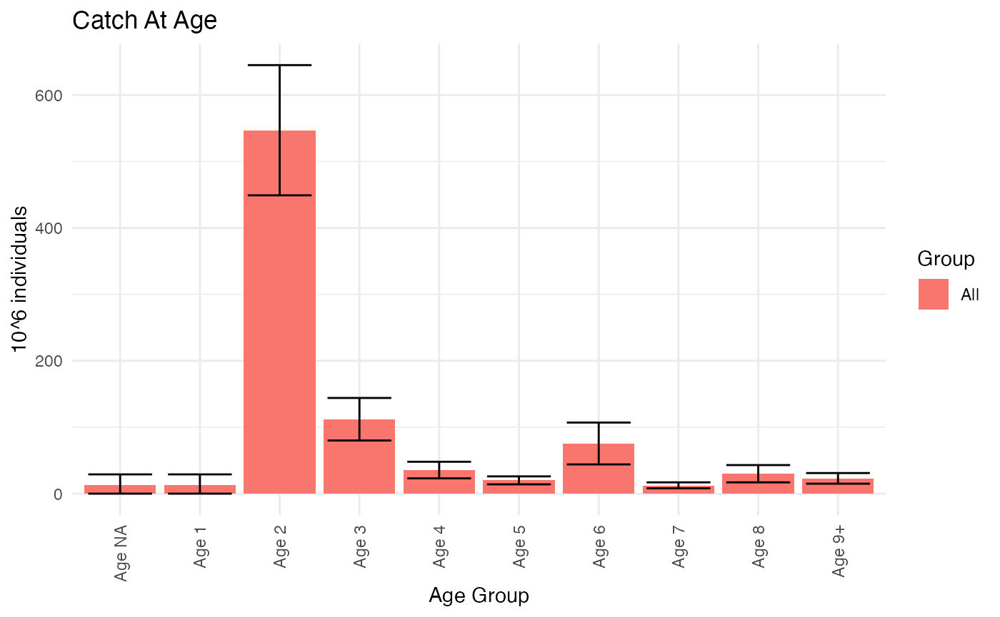

This vignette explains how to use RstoxFDA functions in the StoX user-interface to prepare and run analytical catch-at-age estimates. Some data preparation may be necessary, and the vignette StoX FDA data preparation (baseline) introduces some common data-preparation tasks for catch at age estimation, with formats commonly used at the Institute of Marine Research (IMR). In order to make informed decisions on data preparation and model configuration, it will be necessary to get an overview of the fisheries and how it is covered by the available samples, for instance using the functions introduced in Stox Fisheries overview (report).
This document introduces some problems and tasks, and how RstoxFDA-functions may be applied to solve them. The details of how to use the functions introduced here are provided as function documentation viewable in the StoX “function description”-tab, or in an R-console via ‘?’, e.g:
?RstoxFDA::AnalyticalPopulationEstimateThe “function description”-tab in StoX have some limitations and may not display equations. To render the equation, inspect the function documentation in R or consult the RstoxFDA manual.
Documentation for data formats are provided in the same way. E.g.:
?RstoxFDA::AnalyticalPopulationEstimateDataStoX is composed of several R-packages. Functions will be referred to by their package name with the notation package::function. In the StoX user-interface, the package that functions belong to are not visible, so the function denoted here as package::function, will be available as just function. Any data formats are similarly denoted package::format.
Installation
RstoxFDA is an optional packages in StoX. In order to use the functions introduced in this vignette in the StoX user-interface, make sure RstoxFDA is installed. See installation instructions on github: StoXProject/RstoxFDA. To install the StoX user-interface, see instructions on github: StoXProject/StoX.
Sampling parameters
In order to construct StoX projects like the example below, sampling parameters must be obtained from processes outside of StoX and formatted as described in the documentation for RstoxFDA::ReadPSUSamplingParameters. Examples provided for testing purposes can be located internally at IMR (https://git.imr.no/pelagic/internal/fangstprovelotteriet/samplingparameters/-/tree/main/formatted_files).
Analytical catch at age estimates
A minimal StoX project implementing analytical catch at age estimates with catch lottery data, could have a baseline that look something like this:
| Process name | Function | Description |
|---|---|---|
| ReadSamples | ReadBiotic | Reads sample data |
| StoxBiotic | StoxBiotic | Convert sample data to StoxBiotic |
| AddSamplingId | AddToStoxBiotic | Add serialnumber to StoxBiotic |
| AddLengthGroups | AddLengthGroupStoxBiotic | If catch-at-length is desired. Adds a column to StoxBiotic, grouping individuals by length. |
| ReadPSUsamplingParameters | ReadPSUSamplingParameters | Read sampling parameters for each haul. These ar provided from the catch lottery. |
| ComputeINDsamplingParameters | ComputeIndividualSamplingParameters | Defines sampling parameters for each individual, within haul. Parameters are inferred from data with configurable assumptions. |
| AssignPSUSamplingParameters | AssignPSUSamplingParameters | Matches selections to data records, handles non-response corrections |
| EstimatePSU | AnalyticalPSUEstimate | Estimates abundance, frequencies, totals and means for each haul |
| EstimatePopulation | AnalyticalPopulationEstimate | Estimates abundance, frequencies, totals and means for the population of interest. This estimate is based only on samples, no information about total landings have been included at this point. |
| ReadLandings | ReadLandings | Reads census information: total landings |
| StoxLanding | StoxLanding | Convert census data to StoxLanding |
| RatioEstimateTotal | AnalyticalRatioEstimate | Improves estimates with census information: total landings. This will constitute our final estimate for the stock. |
The following functions provides reporting from analytical estimates:
| Report function | Description |
|---|---|
| ReportAnalyticalCatchAtAge | Tabulate total catch of each age group |
| PlotCatchAtAgeTotals | Plot total catch of each age group |
| ReportAnalyticalCatchAtLength | Tabulate total catch of each length group |
| ReportAnalyticalLengthAtAge | Tabulate mean length of each age group |
| PlotMeanLengthAtAge | Plot mean length of each age group |
| ReportAnalyticalWeightAtAge | Tabulate mean weight of each age group |
| PlotMeanWeightAtAge | Plot mean weight of each age group |
In addition some functions are relevant in this context, that may also be used with other estimation approaches, such as Reca:
| Report function | Description |
|---|---|
| ReportFdaSampling | Produces overview of sampling coverage. Useful for quality assurance. |
| ReportFdaLandings | Produces summaries of landings. |
| ReportFdaSOP | Performs Sum-Of-Products tests, checking that the products of mean weight at age and estimated catch at age sum to total landed weight. |
Analytical estimates with multi-stage sampling
Below is provided a somewhat more detailed overview of the functions that can be used to perform analytical estimates from fisheries dependent sampling, and explanations for how they could be combine to accomodate different designs.
2-stage approximation
RstoxFDA provides a generic framework for analytical estimates of multi-stage sampling data, through a 2-stage approximation. The sampling design is conceptually divided into two steps: Selection of primary sampling units (PSUs), and selection of individuals within each sampling unit. If selection probabilities can be inferred for each of these two steps, we can do the following calculations:
- Abundance, Frequency, Means and Totals of any variables and by any statistical domain observed for individuals can be estimated for each PSU. The estimation of within PSU-variance is not supported. Estimates for each PSU is provided with the function RstoxFDA::AnalyticalPSUEstimate .
- Population quantities and associated sampling variances may then be estimated with the function RstoxFDA::AnalyticalPopulationEstimate .
- Official landing statistics can be utilized to improve the estimate with the function RstoxFDA::AnalyticalRatioEstimate.
In most circumstances, only a small fraction of the PSUs available in a stratum is actually sampled, and typically this provide a good approximation to the sampling variance, even if within-PSU variance is not accounted for.
Example
As an example, we will demonstrate estimation with data from the catch lottery for North-sea Herring in 2022. This is an unequal probability sampling program, which selects hauls in real-time from an active fishery, with selection probabilities proportional to the first reports of catch size. The sampling frame covers Norwegian vessel larger than 15 m which has declared that they are targeting herring when leaving port, and has declared the catch to be North-Sea herring in their live catch reports.
Data
See the vignette StoX FDA data preparation (baseline) for how to read data. We use RstoxData::ReadBiotic and RstoxData::StoxBiotic to get the samples in the format we like. And then we use RstoxData::AddToStoxBiotic to add the column ‘serialnumber’ which is needed for identifying which data records belong to the which sampling parameters. The result of those operations are included in an example data set in RstoxFDA, called ‘CatchLotteryExample’. Similarly, we obtain landings data with RstoxData::ReadLanding, RstoxData::StoxLanding, and RstoxData::FilterLanding. An example data set with landings of North Sea Herring from Norwegian vessels larger than 15 meters is included as an example data set in RstoxFDA, called ‘CatchLotteryLandingExample’.
Sampling parameters
Read PSU sampling parameters
We will start by reading these sampling parameters, which has been prepared outside of StoX:
DefinitionMethod = "ResourceFile"
FileName = system.file("testresources",
"lotteryParameters",
"lotteryDesignNSHstrata.txt",
package="RstoxFDA")
PSUparameters <- RstoxFDA::ReadPSUSamplingParameters(FileName)These sampling variables are design variables for the biological records, and should conventionally be archived in the “biotic” folder in StoX-project folder structure. If for sampling parameters for some reason are lost, an approximation can be computed with RstoxFDA::ComputePSUSamplingParameters. See the section ‘Analytical estimates for subsample of PSUs’ for an example of how to do that.
Note that these files contains selection and inclusion probabilites for every haul selected for sampling:
head(PSUparameters$SelectionTable)
#> Stratum Order SamplingUnitId InclusionProbability HTsamplingWeight
#> <char> <num> <char> <num> <num>
#> 1: Nordsjo NA 38401 0.2131969 0.008946917
#> 2: Nordsjo NA 38433 0.2474124 0.007709618
#> 3: Nordsjo NA 38440 0.1700985 0.011213827
#> 4: Nordsjo NA 38445 0.1089753 0.017503562
#> 5: Nordsjo NA 38438 0.6411753 0.002974935
#> 6: Nordsjo NA 38441 0.2339068 0.008154764
#> SelectionProbability HHsamplingWeight SelectionDescription
#> <num> <num> <char>
#> 1: 0.002177419 0.008497203 <NA>
#> 2: 0.002580645 0.007169515 <NA>
#> 3: 0.001693548 0.010924976 <NA>
#> 4: 0.001048387 0.017648038 <NA>
#> 5: 0.009274194 0.001994996 <NA>
#> 6: 0.002419355 0.007647483 <NA>The column ‘SamplingUnitId’ identifies the data records for selected hauls that have been sampled. This corresponds to ‘serialnumber’ in the sample data. We also have records for selected hauls that was not sampled, which gives us a basis for non-response corrections. These have missing values in the column SamplingUnitId. You may find tabulated below, the sampling parameters for all sampled hauls:
head(PSUparameters$SelectionTable[is.na(PSUparameters$SelectionTable$SamplingUnitId),])
#> Stratum Order SamplingUnitId InclusionProbability HTsamplingWeight
#> <char> <num> <char> <num> <num>
#> 1: Nordsjo NA <NA> 0.19908308 0.009581201
#> 2: Nordsjo NA <NA> 0.17009849 0.011213827
#> 3: Nordsjo NA <NA> 0.17009849 0.011213827
#> 4: Nordsjo NA <NA> 0.17451153 0.010930252
#> 5: Nordsjo NA <NA> 0.20263488 0.009413261
#> 6: Nordsjo NA <NA> 0.06852939 0.027834116
#> SelectionProbability HHsamplingWeight SelectionDescription
#> <num> <num> <char>
#> 1: 0.0020161290 0.009176980 <NA>
#> 2: 0.0016935484 0.010924976 <NA>
#> 3: 0.0016935484 0.010924976 <NA>
#> 4: 0.0017419355 0.010621504 <NA>
#> 5: 0.0020564516 0.008997039 <NA>
#> 6: 0.0006451613 0.028678061 <NA>The samples are all selected from the same stratum, called “Nordsjo”. Later on, we will need to put this stratum in correspondance with census data (sales-notes). We have therefore added columns to the table ‘StratificationVariables’:
PSUparameters$StratificationVariables
#> Stratum Species
#> <char> <char>
#> 1: Nordsjo 061104This tells use that the Stratum “Nordsjo” is defined by the Species code “061104”, which we will later find in the landings data. You can use other or additional columns in stead, if that is more appropriate for your fishery or the way you prepare the landings data. You may also use StoX functions for adding columns to the landings, to make sure that the strata sampled are identifiable in the landings. If no stratification variables are provided, you may add them with RstoxFDA::AddPsuStratificationVariables, or you may manually edit the resource file.
Ideally, the Stratification Variables should encode the sampling frame of each stratum, so that we can be explicit about any part of the fishery that is not covered by our sampling. The example provided here implicitly assumes that we are covering the entire fishery, but this is typically not true. For instance, sampling programs based in electronic logbook reports, does not cover fishing activity from vessels without logbooks. RstoxFDA provide functions for explicit inference to out-of-frame strata, but they are not introduced here. Consult function documentation for RstoxFDA::ExtendAnalyticalSamplingFrameCoverage, RstoxFDA::InterpolateAnalyticalDomainEstimates, and RstoxFDA::AggregateAnalyticalEstimate.
For purposes of estimation, the case when sampling is not stratified is the same as if we have only one stratum. So the Stratum column can always be encoded.
Compute sampling parameters for measurements
We also need to know the sampling parameters for each fish in each haul. RstoxFDA provides support for calculating those for some common sampling schemes. We can infer sampling parameters for observations of individual fish within a haul with the function RstoxFDA::ComputeIndvidiualSamplingParameters. In the case of the catch lottery sampling, we will assume that fish that are selected for measurement is a simple random sample of the catch (DefinitionMethod=“SRS”). Sometimes different sampling schemes are employed for different parameters, so we have to specify a set of parameter which signals that the specimen is selected. We will specify the selected individuals as those where either sex or age is observed, as sex and age is always observed together in this program, and specifying sex rather than just age allows us to catch missing age records (due to for instance readability):
StoxBioticData = RstoxFDA::CatchLotteryExample
DefinitionMethod = "SRS"
Parameters = c("IndividualSex", "IndividualAge")
indParameters <- RstoxFDA::ComputeIndividualSamplingParameters(StoxBioticData = StoxBioticData,
DefinitionMethod = DefinitionMethod,
Parameters=Parameters)Note that we have obtained sampling parameters for individual fish sampled for sex or age, the haul is identified by the column ‘SampleId’ that corresponds to ‘Haul’ in StoxBioticData, and the individual is identified by ‘IndividualId’ which corresponds to ‘Individual’ in StoxBioticData. Within-haul stratification is also inferred:
head(indParameters$SelectionTable)
#> Key: <SampleId, Stratum>
#> SampleId Stratum Order
#> <char> <char> <num>
#> 1: NA/19/2022/10024/20-1-38401 sild'G05/161722.G05/126417/Clupea harengus NA
#> 2: NA/19/2022/10024/20-1-38401 sild'G05/161722.G05/126417/Clupea harengus NA
#> 3: NA/19/2022/10024/20-1-38401 sild'G05/161722.G05/126417/Clupea harengus NA
#> 4: NA/19/2022/10024/20-1-38401 sild'G05/161722.G05/126417/Clupea harengus NA
#> 5: NA/19/2022/10024/20-1-38401 sild'G05/161722.G05/126417/Clupea harengus NA
#> 6: NA/19/2022/10024/20-1-38401 sild'G05/161722.G05/126417/Clupea harengus NA
#> IndividualId
#> <char>
#> 1: NA/19/2022/10024/20-1-38401-sild'G05/161722.G05/126417/Clupea harengus-1-1
#> 2: NA/19/2022/10024/20-1-38401-sild'G05/161722.G05/126417/Clupea harengus-1-2
#> 3: NA/19/2022/10024/20-1-38401-sild'G05/161722.G05/126417/Clupea harengus-1-3
#> 4: NA/19/2022/10024/20-1-38401-sild'G05/161722.G05/126417/Clupea harengus-1-4
#> 5: NA/19/2022/10024/20-1-38401-sild'G05/161722.G05/126417/Clupea harengus-1-5
#> 6: NA/19/2022/10024/20-1-38401-sild'G05/161722.G05/126417/Clupea harengus-1-6
#> InclusionProbability HTsamplingWeight SelectionProbability HHsamplingWeight
#> <num> <num> <num> <num>
#> 1: 3.641113e-05 0.02631579 NA NA
#> 2: 3.641113e-05 0.02631579 NA NA
#> 3: 3.641113e-05 0.02631579 NA NA
#> 4: 3.641113e-05 0.02631579 NA NA
#> 5: 3.641113e-05 0.02631579 NA NA
#> 6: 3.641113e-05 0.02631579 NA NA
#> SelectionDescription
#> <char>
#> 1: <NA>
#> 2: <NA>
#> 3: <NA>
#> 4: <NA>
#> 5: <NA>
#> 6: <NA>NA-domains and non-response assumptions
Missing observations of individuals results in domains with the value NA, when these variables are used in domain definitions. For instance the example above has fish where sex is recorded, but not age. This will show up later as age groups with the value NA, and (minimum) Age 0. If ‘ComputeIndividualSamplingParameters had instead been defined with only the argument “IndividualAge” for ’Parameters’, no sampling parameters would be provided for these individuals. That would correspond to an assumption that they where missing at random:
StoxBioticData = RstoxFDA::CatchLotteryExample
DefinitionMethod = "SRS"
Parameters = c("IndividualAge")
indParametersNoNA <- RstoxFDA::ComputeIndividualSamplingParameters(StoxBioticData = StoxBioticData,
DefinitionMethod = DefinitionMethod,
Parameters=Parameters)Note that some individuals are now left out of the table of sampling parameters, and hence of subsequent computations:
head(indParameters$SelectionTable[!(indParameters$SelectionTable$IndividualId %in%
indParametersNoNA$SelectionTable$IndividualId),])
#> Key: <SampleId, Stratum>
#> SampleId Stratum
#> <char> <char>
#> 1: NA/19/2022/10024/20-11-38411 sild'G05/161722.G05/126417/Clupea harengus
#> 2: NA/19/2022/10024/20-13-38413 sild'G05/161722.G05/126417/Clupea harengus
#> 3: NA/19/2022/10024/20-16-38416 sild'G05/161722.G05/126417/Clupea harengus
#> 4: NA/19/2022/10024/20-21-38421 sild'G05/161722.G05/126417/Clupea harengus
#> 5: NA/19/2022/10024/20-21-38421 sild'G05/161722.G05/126417/Clupea harengus
#> 6: NA/19/2022/10024/20-23-38423 sild'G05/161722.G05/126417/Clupea harengus
#> Order
#> <num>
#> 1: NA
#> 2: NA
#> 3: NA
#> 4: NA
#> 5: NA
#> 6: NA
#> IndividualId
#> <char>
#> 1: NA/19/2022/10024/20-11-38411-sild'G05/161722.G05/126417/Clupea harengus-1-31
#> 2: NA/19/2022/10024/20-13-38413-sild'G05/161722.G05/126417/Clupea harengus-1-55
#> 3: NA/19/2022/10024/20-16-38416-sild'G05/161722.G05/126417/Clupea harengus-1-1
#> 4: NA/19/2022/10024/20-21-38421-sild'G05/161722.G05/126417/Clupea harengus-1-30
#> 5: NA/19/2022/10024/20-21-38421-sild'G05/161722.G05/126417/Clupea harengus-1-31
#> 6: NA/19/2022/10024/20-23-38423-sild'G05/161722.G05/126417/Clupea harengus-1-59
#> InclusionProbability HTsamplingWeight SelectionProbability HHsamplingWeight
#> <num> <num> <num> <num>
#> 1: 1.829431e-05 0.02000000 NA NA
#> 2: 6.056471e-05 0.01666667 NA NA
#> 3: 4.931088e-05 0.02000000 NA NA
#> 4: 5.699998e-05 0.01694915 NA NA
#> 5: 5.699998e-05 0.01694915 NA NA
#> 6: 1.102286e-05 0.01666667 NA NA
#> SelectionDescription
#> <char>
#> 1: <NA>
#> 2: <NA>
#> 3: <NA>
#> 4: <NA>
#> 5: <NA>
#> 6: <NA>This assumption is commonly invoked, but ages are probably not usually missing at random. Rather they are missing due to age-dependent readability-issues.
Match sampling parameters to data records
We will now put data and selections in correspondence with the function RstoxFDA::AssignPSUsamplingParameters. We will Identify hauls with the StoxBioticData variable Haul, which is how the PSU is identified in the specification of sampling parameters for individual fish (individualParametersData, computed above):
PSUSamplingParametersData = PSUparameters
StoxBioticData = RstoxFDA::CatchLotteryExample
SamplingUnitId = "serialnumber"
DataRecordId = "Haul"
DefinitionMethod = "MissingAtRandom"
PSUassigment = RstoxFDA::AssignPSUSamplingParameters(DefinitionMethod=DefinitionMethod,
StoxBioticData=StoxBioticData,
PSUSamplingParametersData=PSUparameters,
SamplingUnitId=SamplingUnitId,
DataRecordId=DataRecordId)The procedure has corrected sampling parameters for non-response, and removed non-respondents from the table of selections. We have also changed the content of the column ‘SamplingUnitId’, so that it now corresponds to the column used to identify hauls in StoxBiotic:
head(PSUassigment$SelectionTable)
#> Stratum Order SamplingUnitId InclusionProbability
#> <char> <num> <char> <num>
#> 1: Nordsjo NA NA/19/2022/10024/20-1-38401 0.15989769
#> 2: Nordsjo NA NA/19/2022/10024/20-33-38433 0.18555930
#> 3: Nordsjo NA NA/19/2022/10024/20-40-38440 0.12757387
#> 4: Nordsjo NA NA/19/2022/10024/20-45-38445 0.08173144
#> 5: Nordsjo NA NA/19/2022/10024/20-38-38438 0.48088148
#> 6: Nordsjo NA NA/19/2022/10024/20-41-38441 0.17543012
#> HTsamplingWeight SelectionProbability HHsamplingWeight SelectionDescription
#> <num> <num> <num> <char>
#> 1: 0.012028199 0.002177419 0.011431279 <NA>
#> 2: 0.010364779 0.002580645 0.009645141 <NA>
#> 3: 0.015075825 0.001693548 0.014697358 <NA>
#> 4: 0.023531719 0.001048387 0.023741887 <NA>
#> 5: 0.003999491 0.009274194 0.002683865 <NA>
#> 6: 0.010963233 0.002419355 0.010288151 <NA>Estimation
Since these estimators are based on the sampling design, they are generic with respect to variables of interest. For all numeric variables, they can provide an estimate of totals and means by some specified domain definition. In addition total abundance in domain and the frequency of occurrence in domain is estimated. A domain is any defined group of fish in the catches. Of primary interest is groups defined by fish measurements and observations, such as age or length, but caught fish are also distinguished by fishing activity variables, such as the gear used to catch them, or the time of catch. For purposes of estimation we need to distinguish between domain variables that are exclusive to higher level selection and those that are not. Age is for example available for any fish, so estimates of abundance in an age group is backed by all samples. Gear is however exclusive to a catch so estimates of abundance in gear groups are only backed by the samples that are in that gear-domain. In this example we will only estimate domains that are based on observations of fish, but in general this text and the documentation for functions refer to PSU domains for the domains that are exclusive to a primary sampling unit (gear, quarter, area, etc.).
PSU-estimation
We first estimate abundance, frequencies, totals and means for each PSU. We need to specify the domain we want to estimate for. We provide age so that we get estimates for each age group. We also need to specify which variables we want means and totals for. We will specify weight and length:
StoxBioticData = RstoxFDA::CatchLotteryExample
IndividualSamplingParametersData = indParameters
DomainVariables = c("IndividualAge")
Variables = c("IndividualRoundWeight", "IndividualTotalLength")
psuEstimates <- RstoxFDA::AnalyticalPSUEstimate(StoxBioticData=StoxBioticData,
IndividualSamplingParametersData = IndividualSamplingParametersData,
DomainVariables=DomainVariables,
Variables=Variables)We now have estimates of abundance and frequency for each age group for each PSU/haul:
head(psuEstimates$Abundance)
#> SampleId Stratum
#> <char> <char>
#> 1: NA/19/2022/10024/20-1-38401 sild'G05/161722.G05/126417/Clupea harengus
#> 2: NA/19/2022/10024/20-1-38401 sild'G05/161722.G05/126417/Clupea harengus
#> 3: NA/19/2022/10024/20-1-38401 sild'G05/161722.G05/126417/Clupea harengus
#> 4: NA/19/2022/10024/20-1-38401 sild'G05/161722.G05/126417/Clupea harengus
#> 5: NA/19/2022/10024/20-1-38401 sild'G05/161722.G05/126417/Clupea harengus
#> 6: NA/19/2022/10024/20-1-38401 sild'G05/161722.G05/126417/Clupea harengus
#> Domain Abundance Frequency
#> <char> <num> <num>
#> 1: 1 0.00 0.00000000
#> 2: 10 54928.26 0.05263158
#> 3: 11 54928.26 0.05263158
#> 4: 12 0.00 0.00000000
#> 5: 13 0.00 0.00000000
#> 6: 2 0.00 0.00000000Note that domains in this table are just identified by a text-variable. As for stratification, more detailed information about the domain is stored in a separate table:
psuEstimates$DomainVariables
#> Domain IndividualAge
#> <char> <int>
#> 1: 1 1
#> 2: 10 10
#> 3: 11 11
#> 4: 12 12
#> 5: 13 13
#> 6: 2 2
#> 7: 3 3
#> 8: 4 4
#> 9: 5 5
#> 10: 6 6
#> 11: 7 7
#> 12: 8 8
#> 13: 9 9
#> 14: NA NAThis reveals that the domain “1” is defined by fish with the value 1 for the variable “IndividualAge”. Note that fish with missing ages have become their own domain called ‘NA’.
We also have estimates of totals and means of provided variables:
head(psuEstimates$Variables)
#> SampleId Stratum
#> <char> <char>
#> 1: NA/19/2022/10024/20-1-38401 sild'G05/161722.G05/126417/Clupea harengus
#> 2: NA/19/2022/10024/20-1-38401 sild'G05/161722.G05/126417/Clupea harengus
#> 3: NA/19/2022/10024/20-1-38401 sild'G05/161722.G05/126417/Clupea harengus
#> 4: NA/19/2022/10024/20-1-38401 sild'G05/161722.G05/126417/Clupea harengus
#> 5: NA/19/2022/10024/20-1-38401 sild'G05/161722.G05/126417/Clupea harengus
#> 6: NA/19/2022/10024/20-1-38401 sild'G05/161722.G05/126417/Clupea harengus
#> Domain Variable Total Mean
#> <char> <char> <num> <num>
#> 1: 1 IndividualRoundWeight 0 NaN
#> 2: 1 IndividualTotalLength 0 NaN
#> 3: 10 IndividualRoundWeight 12139146 221.0
#> 4: 10 IndividualTotalLength 1730240 31.5
#> 5: 11 IndividualRoundWeight 11425079 208.0
#> 6: 11 IndividualTotalLength 1730240 31.5For domains / age groups with estimated zero abundance, totals are 0, and means are NaN.
Population-estimation
We can no proceed with estimating these parameters for the total popuation of catches. We use RstoxFDA::AnalyticalPopulationEstimate:
PSUSamplingParametersData = PSUassigment
AnalyticalPSUEstimateData = psuEstimates
populationEstimates = RstoxFDA::AnalyticalPopulationEstimate(PSUSamplingParametersData,
AnalyticalPSUEstimateData = AnalyticalPSUEstimateData)Which gives abundance, frequencies, means and totals for the entire population:
head(populationEstimates$Abundance)
#> Key: <Stratum>
#> Stratum
#> <char>
#> 1: PSU-stratum:Nordsjo Lower-stratum:sild'G05/161722.G05/126417/Clupea harengus
#> 2: PSU-stratum:Nordsjo Lower-stratum:sild'G05/161722.G05/126417/Clupea harengus
#> 3: PSU-stratum:Nordsjo Lower-stratum:sild'G05/161722.G05/126417/Clupea harengus
#> 4: PSU-stratum:Nordsjo Lower-stratum:sild'G05/161722.G05/126417/Clupea harengus
#> 5: PSU-stratum:Nordsjo Lower-stratum:sild'G05/161722.G05/126417/Clupea harengus
#> 6: PSU-stratum:Nordsjo Lower-stratum:sild'G05/161722.G05/126417/Clupea harengus
#> Domain Abundance Frequency
#> <char> <num> <num>
#> 1: All/IndividualAge:1 12166215 0.014684930
#> 2: All/IndividualAge:10 3744033 0.004519143
#> 3: All/IndividualAge:11 2318774 0.002798820
#> 4: All/IndividualAge:12 2085513 0.002517267
#> 5: All/IndividualAge:13 1292641 0.001560251
#> 6: All/IndividualAge:2 514265071 0.620731006
head(populationEstimates$Variables)
#> Stratum
#> <char>
#> 1: PSU-stratum:Nordsjo Lower-stratum:sild'G05/161722.G05/126417/Clupea harengus
#> 2: PSU-stratum:Nordsjo Lower-stratum:sild'G05/161722.G05/126417/Clupea harengus
#> 3: PSU-stratum:Nordsjo Lower-stratum:sild'G05/161722.G05/126417/Clupea harengus
#> 4: PSU-stratum:Nordsjo Lower-stratum:sild'G05/161722.G05/126417/Clupea harengus
#> 5: PSU-stratum:Nordsjo Lower-stratum:sild'G05/161722.G05/126417/Clupea harengus
#> 6: PSU-stratum:Nordsjo Lower-stratum:sild'G05/161722.G05/126417/Clupea harengus
#> Domain Variable Total Mean
#> <char> <char> <num> <num>
#> 1: All/IndividualAge:1 IndividualRoundWeight 702360170 57.73038
#> 2: All/IndividualAge:1 IndividualTotalLength 224959951 18.49055
#> 3: All/IndividualAge:10 IndividualRoundWeight 840470457 224.48266
#> 4: All/IndividualAge:10 IndividualTotalLength 114613425 30.61229
#> 5: All/IndividualAge:11 IndividualRoundWeight 519743141 224.14563
#> 6: All/IndividualAge:11 IndividualTotalLength 70781025 30.52519Note that the names of domains have changed, to incorporate any domains that vary between PSUs (none in this case). The definition is however still the same, as can be confirmed by inspecting the table of DomainVariables:
populationEstimates$DomainVariables
#> Domain IndividualAge
#> <char> <int>
#> 1: All/IndividualAge:1 1
#> 2: All/IndividualAge:10 10
#> 3: All/IndividualAge:11 11
#> 4: All/IndividualAge:12 12
#> 5: All/IndividualAge:13 13
#> 6: All/IndividualAge:2 2
#> 7: All/IndividualAge:3 3
#> 8: All/IndividualAge:4 4
#> 9: All/IndividualAge:5 5
#> 10: All/IndividualAge:6 6
#> 11: All/IndividualAge:7 7
#> 12: All/IndividualAge:8 8
#> 13: All/IndividualAge:9 9
#> 14: All/IndividualAge:NA NAWe also have full sampling covariance matrices, which will give a basis for reporting sampling variances:
head(populationEstimates$AbundanceCovariance)
#> Stratum
#> <char>
#> 1: PSU-stratum:Nordsjo Lower-stratum:sild'G05/161722.G05/126417/Clupea harengus
#> 2: PSU-stratum:Nordsjo Lower-stratum:sild'G05/161722.G05/126417/Clupea harengus
#> 3: PSU-stratum:Nordsjo Lower-stratum:sild'G05/161722.G05/126417/Clupea harengus
#> 4: PSU-stratum:Nordsjo Lower-stratum:sild'G05/161722.G05/126417/Clupea harengus
#> 5: PSU-stratum:Nordsjo Lower-stratum:sild'G05/161722.G05/126417/Clupea harengus
#> 6: PSU-stratum:Nordsjo Lower-stratum:sild'G05/161722.G05/126417/Clupea harengus
#> Domain1 Domain2 AbundanceCovariance
#> <char> <char> <num>
#> 1: All/IndividualAge:1 All/IndividualAge:1 8.802669e+13
#> 2: All/IndividualAge:10 All/IndividualAge:1 -9.691640e+11
#> 3: All/IndividualAge:10 All/IndividualAge:10 1.500574e+12
#> 4: All/IndividualAge:11 All/IndividualAge:1 -6.002278e+11
#> 5: All/IndividualAge:11 All/IndividualAge:10 4.454114e+11
#> 6: All/IndividualAge:11 All/IndividualAge:11 9.830381e+11
#> FrequencyCovariance
#> <num>
#> 1: 1.282470e-04
#> 2: -1.411985e-06
#> 3: 2.186201e-06
#> 4: -8.744781e-07
#> 5: 6.489245e-07
#> 6: 1.432198e-06Landings-ratio-estimation
We have not yet utilized the census information on landings. We can improve our estimate with a ratio estimator that corrects the abundance with the ratio between estimated total weight across all domains / age groups and the reported total landings. The function RstoxFDA::AnalyticalRatioEstimate supports this, but needs the strata or PSU-domains to be in correspondence with variables in the landings, which is why we wanted the PSUs stratification to be defined by ‘Species’. We perform the ratio estimate, and indicate in the argument ‘StratificationVariables’ that we want to match to landings by the column ‘Species’:
AnalyticalPopulationEstimateData = populationEstimates
StoxLandingData = RstoxFDA::CatchLotteryLandingExample
WeightVariable = "IndividualRoundWeight"
ratioEst <- RstoxFDA::AnalyticalRatioEstimate(AnalyticalPopulationEstimateData = AnalyticalPopulationEstimateData,
StoxLandingData = StoxLandingData,
WeightVariable = WeightVariable, StratificationVariables = "Species")Comparing this with the estimate above, the frequencies should be nearly identical, but some corrections are expected for the abundances:
merge(ratioEst$Abundance, populationEstimates$Abundance,
by=c("Stratum", "Domain"), suffix=c(".ratioEst", ".designEst"))
#> Key: <Stratum, Domain>
#> Stratum
#> <char>
#> 1: PSU-stratum:Nordsjo Lower-stratum:sild'G05/161722.G05/126417/Clupea harengus
#> 2: PSU-stratum:Nordsjo Lower-stratum:sild'G05/161722.G05/126417/Clupea harengus
#> 3: PSU-stratum:Nordsjo Lower-stratum:sild'G05/161722.G05/126417/Clupea harengus
#> 4: PSU-stratum:Nordsjo Lower-stratum:sild'G05/161722.G05/126417/Clupea harengus
#> 5: PSU-stratum:Nordsjo Lower-stratum:sild'G05/161722.G05/126417/Clupea harengus
#> 6: PSU-stratum:Nordsjo Lower-stratum:sild'G05/161722.G05/126417/Clupea harengus
#> 7: PSU-stratum:Nordsjo Lower-stratum:sild'G05/161722.G05/126417/Clupea harengus
#> 8: PSU-stratum:Nordsjo Lower-stratum:sild'G05/161722.G05/126417/Clupea harengus
#> 9: PSU-stratum:Nordsjo Lower-stratum:sild'G05/161722.G05/126417/Clupea harengus
#> 10: PSU-stratum:Nordsjo Lower-stratum:sild'G05/161722.G05/126417/Clupea harengus
#> 11: PSU-stratum:Nordsjo Lower-stratum:sild'G05/161722.G05/126417/Clupea harengus
#> 12: PSU-stratum:Nordsjo Lower-stratum:sild'G05/161722.G05/126417/Clupea harengus
#> 13: PSU-stratum:Nordsjo Lower-stratum:sild'G05/161722.G05/126417/Clupea harengus
#> 14: PSU-stratum:Nordsjo Lower-stratum:sild'G05/161722.G05/126417/Clupea harengus
#> Domain Abundance.ratioEst Frequency.ratioEst
#> <char> <num> <num>
#> 1: All/IndividualAge:1 12945206 0.014684930
#> 2: All/IndividualAge:10 3983760 0.004519143
#> 3: All/IndividualAge:11 2467243 0.002798820
#> 4: All/IndividualAge:12 2219046 0.002517267
#> 5: All/IndividualAge:13 1375408 0.001560251
#> 6: All/IndividualAge:2 547192997 0.620731006
#> 7: All/IndividualAge:3 111936107 0.126979352
#> 8: All/IndividualAge:4 35273048 0.040013440
#> 9: All/IndividualAge:5 20207531 0.022923248
#> 10: All/IndividualAge:6 75347636 0.085473707
#> 11: All/IndividualAge:7 12479586 0.014156735
#> 12: All/IndividualAge:8 29953066 0.033978499
#> 13: All/IndividualAge:9 12917612 0.014653627
#> 14: All/IndividualAge:NA 13231744 0.015009976
#> Abundance.designEst Frequency.designEst
#> <num> <num>
#> 1: 12166215 0.014684930
#> 2: 3744033 0.004519143
#> 3: 2318774 0.002798820
#> 4: 2085513 0.002517267
#> 5: 1292641 0.001560251
#> 6: 514265071 0.620731006
#> 7: 105200231 0.126979352
#> 8: 33150454 0.040013440
#> 9: 18991521 0.022923248
#> 10: 70813511 0.085473707
#> 11: 11728614 0.014156735
#> 12: 28150608 0.033978499
#> 13: 12140281 0.014653627
#> 14: 12435509 0.015009976The function RstoxFDA::AnalyticalRatioEstimate also supports other kinds of ratio estimation based on only frequencies and mean weights, so that a total abundance estimate can be obtained even for sampling programs with less detailed information about the sampling parameters.
Finally we can report the domain estimate:
AnalyticalPopulationEstimateData = ratioEst
PlusGroup = 9
IntervalWidth = .9
Decimals = 0
Unit = "10^6 individuals"
caaReport <- ReportAnalyticalCatchAtAge(AnalyticalPopulationEstimateData = AnalyticalPopulationEstimateData,
PlusGroup = PlusGroup,
IntervalWidth = IntervalWidth,
Decimals = Decimals,
Unit = Unit)
caaReport$NbyAge
#> AgeGroup Age CatchAtAge SD Low High
#> <char> <num> <num> <num> <num> <num>
#> 1: Age NA 0 13 10 0 29
#> 2: Age 1 1 13 10 0 29
#> 3: Age 2 2 547 60 449 645
#> 4: Age 3 3 112 19 80 144
#> 5: Age 4 4 35 8 23 48
#> 6: Age 5 5 20 4 14 26
#> 7: Age 6 6 75 19 44 107
#> 8: Age 7 7 12 3 8 17
#> 9: Age 8 8 30 8 17 43
#> 10: Age 9+ 9 23 5 15 31Note that the domain of fish with missing age is preserved and assigned the minimum age 0, and we have added a plus group with minimum age 9. Downstream use may not support undefined age groups, and NAs may have to be dealt with. RstoxFDA have limited support for this. The easiest is to remove NA individuals (RstoxData::FilterStoxBiotic), or not calculate selection probabilites for them (RstoxFDA::ComputeIndividualSamplingParameters). These options corresponds to the somewhat unrealistic assumption that ages are missing at random. The report table is compatible with those produced by other estimation procedures, such as Reca, so that we can use the same plotting functions:
ReportFdaCatchAtAgeData = caaReport
PlotCatchAtAgeTotals(ReportFdaCatchAtAgeData = ReportFdaCatchAtAgeData)
Complex domains
For the sake of illustration we will redo the computation with domains that also include other variables beside age. We will first add another fish-observation to the domain defintion, namely sex:
# Redo psu estimates with new domain definition
DomainVariables = c("IndividualAge", "IndividualSex")
psuEstimates <- RstoxFDA::AnalyticalPSUEstimate(StoxBioticData=StoxBioticData,
IndividualSamplingParametersData = IndividualSamplingParametersData,
DomainVariables=DomainVariables,
Variables=Variables)
# Redo population estimate
AnalyticalPSUEstimateData = psuEstimates
populationEstimates = RstoxFDA::AnalyticalPopulationEstimate(PSUSamplingParametersData,
AnalyticalPSUEstimateData = AnalyticalPSUEstimateData)
# Redo ratio estimate
AnalyticalPopulationEstimateData = populationEstimates
ratioEst <- RstoxFDA::AnalyticalRatioEstimate(AnalyticalPopulationEstimateData=AnalyticalPopulationEstimateData,
StoxLandingData = StoxLandingData,
WeightVariable = WeightVariable, StratificationVariables = "Species")
# Report
AnalyticalPopulationEstimateData = ratioEst
caaReport <- ReportAnalyticalCatchAtAge(AnalyticalPopulationEstimateData = AnalyticalPopulationEstimateData, PlusGroup = PlusGroup, IntervalWidth = IntervalWidth, Decimals = Decimals, "10^6 individuals")
# Plot
ReportFdaCatchAtAgeData = caaReport
PlotCatchAtAgeTotals(ReportFdaCatchAtAgeData = ReportFdaCatchAtAgeData)As before, note that the exact variables and values that define the domains are documented on the ‘DomainVariabes’-table:
head(AnalyticalPopulationEstimateData$DomainVariables)
#> Domain IndividualAge IndividualSex
#> <char> <int> <char>
#> 1: All/IndividualAge:1/IndividualSex:F 1 F
#> 2: All/IndividualAge:1/IndividualSex:M 1 M
#> 3: All/IndividualAge:10/IndividualSex:F 10 F
#> 4: All/IndividualAge:10/IndividualSex:M 10 M
#> 5: All/IndividualAge:11/IndividualSex:F 11 F
#> 6: All/IndividualAge:11/IndividualSex:M 11 MWe can also add PSU-domains, such as quarter. Some of these may be put in correspondence with landing-statistics, and provide a higher-resolution allocation of landings in the ratio-estimation, although typically at the cost of somewhat lower precision in domain estimates.
We will first use standard StoX tools to add the quarter to both landings and samples:
quarter <- RstoxFDA::DefinePeriod(TemporalCategory = "Quarter")
StoxBioticDataWquarter <- RstoxFDA::AddPeriodStoxBiotic(StoxBioticData, quarter, "Quarter")
StoxLandingDataWquarter <- RstoxFDA::AddPeriodStoxLanding(StoxLandingData, quarter, "Quarter")And then specify the PSU domains, when computing sampling parameters for individuals:
DomainVariables = c("IndividualAge")
PSUDomainVariables <- c("Quarter")
StoxBioticData <- StoxBioticDataWquarter
StoxLandingData <- StoxLandingDataWquarter
psuEstimates <- RstoxFDA::AnalyticalPSUEstimate(StoxBioticData = StoxBioticData,
IndividualSamplingParametersData = IndividualSamplingParametersData,
DomainVariables = DomainVariables,
Variables = Variables,
PSUDomainVariables = PSUDomainVariables)Otherwise the estimation is exactly as before:
# Redo psu estimates with new domain definition
DomainVariables = c("IndividualAge")
PSUDomainVariables <- c("Quarter")
StoxBioticData <- StoxBioticDataWquarter
StoxLandingData <- StoxLandingDataWquarter
psuEstimates <- RstoxFDA::AnalyticalPSUEstimate(StoxBioticData = StoxBioticData,
IndividualSamplingParametersData = IndividualSamplingParametersData,
DomainVariables = DomainVariables,
Variables = Variables,
PSUDomainVariables = PSUDomainVariables)
# Redo population estimate
AnalyticalPSUEstimateData = psuEstimates
populationEstimates = RstoxFDA::AnalyticalPopulationEstimate(PSUSamplingParametersData = PSUSamplingParametersData,
AnalyticalPSUEstimateData = AnalyticalPSUEstimateData)
# Redo ratio estimate
AnalyticalPopulationEstimateData = populationEstimates
StratificationVariables = c("Species")
ratioEst <- RstoxFDA::AnalyticalRatioEstimate(AnalyticalPopulationEstimateData = AnalyticalPopulationEstimateData,
StoxLandingData = StoxLandingData,
WeightVariable = WeightVariable,
StratificationVariables = StratificationVariables)
#> Warning in stoxWarning(paste("No Domain Variables configured, although
#> appropriately named domains are available in Landings", : StoX: No Domain
#> Variables configured, although appropriately named domains are available in
#> Landings Quarter
# Report
AnalyticalPopulationEstimateData = ratioEst
Unit = "10^6 individuals"
caaReport <- ReportAnalyticalCatchAtAge(AnalyticalPopulationEstimateData = AnalyticalPopulationEstimateData,
PlusGroup = PlusGroup,
IntervalWidth = IntervalWidth,
Decimals = Decimals,
Unit = Unit)
# Plot
ReportFdaCatchAtAgeData = caaReport
PlotCatchAtAgeTotals(ReportFdaCatchAtAgeData = ReportFdaCatchAtAgeData)Analytical estimates for incomplete records
Sometimes samples that successfully reach IMR are only partially measured. This could be because they arrived too late, the sample was of poor quality, or because some parameters (e.g. age) was not prioritized for observation due to cost or time constraints. In this situation there may be a mismatch between the PSUs that are listed as sampled PSUs in the file with sampling parameters, and what is made available for estimation in StoX. ‘AssignPSUSamplingParameters’ will treat these as if they were regular non-response samples, and issue a warning about that. At this point we must consider if we have a representative sub-sample of the PSUs, and re-configure our estimation.
Computing sampling parameters
If actual sampling parameters are not available, we could approximately compute them from the filtered samples. Below is an example on how to do this for samples from the catch lottery, using the function RstoxFDA::ComputePSUSamplingParameters:
StoxBioticData <- RstoxFDA::CatchLotteryExample
DefinitionMethod <- "ProportionalPoissonSampling"
SamplingUnitId <- "serialnumber"
StratumName <- "Nordsjo2022"
Quoata <- 445000000
ExpectedSampleSize <- 200
PSUparameters <- RstoxFDA::ComputePSUSamplingParameters(StoxBioticData = StoxBioticData,
DefinitionMethod = DefinitionMethod,
SamplingUnitId = SamplingUnitId,
StratumName=StratumName,
Quota = Quoata,
ExpectedSampleSize = ExpectedSampleSize)In order to have estimates matchable with landings, we need to add some stratification variables, using the function RstoxFDA::AddPsuStratificationVariables. We will add the variable ‘CountryVessel’ as stratification variable:
PSUSamplingParametersData <- PSUparameters
StratificationVariables <- c("CountryVessel")
StratificationVariablesTable <- data.table::data.table(Stratum=StratumName, CountryVessel="NOR")
PSUparameters <- RstoxFDA::AddPsuStratificationVariables(PSUSamplingParametersData=PSUSamplingParametersData,
StratificationVariables = StratificationVariables,
StratificationVariablesTable = StratificationVariablesTable
)The estimation can then proceed as usual. We have only made two small modifications to the usual workflow. We have removed the function RstoxFDA::ReadPSUSamplingParameters, and replaced it with the functions: RstoxFDA::ComputePSUSamplingParameters and RstoxFDA::AddPsuStratificationVariables.